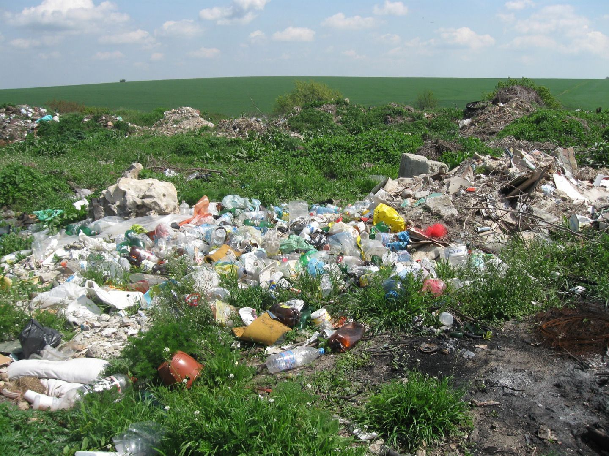

โลกไม่ได้ต้องการคนทำ Zero-Waste เพียงคนเดียวอย่างสมบูรณ์แบบ แต่ต้องการคนนับล้านที่เริ่มต้นลงมือทำแบบไม่สมบูรณ์แบบในทุกๆ วัน
เมื่อเราทิ้งขยะ สิ่งเหล่านั้นไม่ได้หายไปไหน แต่กลับมาส่งผลกระทบต่อเรา
ขยะพลาสติกกว่า 8 ล้านตันไหลลงสู่มหาสมุทรในแต่ละปี สัตว์ทะเลเช่นเต่า ปลาวาฬ และนกทะเลกลืนกินขยะจนเสียชีวิตหรือติดกับดักขยะพลาสติก
พลาสติกแตกตัวเป็นชิ้นขนาดเล็กกว่า 5 มิลลิเมตร ปนเปื้อนในอาหารทะเล เกลือ น้ำดื่ม และอากาศ มนุษย์บริโภคไมโครพลาสติกเทียบเท่าบัตรเครดิต 1 ใบต่อสัปดาห์
ขยะอินทรีย์ที่ถูกหมักหมมในหลุมฝังกลบแบบไร้ออกซิเจน จะปล่อยก๊าซมีเทน (CH4) ซึ่งเร่งให้เกิดการเปลี่ยนแปลงสภาพภูมิอากาศและภัยพิบัติรุนแรง
เปลี่ยนผ่านจากระบบเดิมที่สูญเปล่า สู่การหมุนเวียนคุณค่าไม่รู้จบ
ผลาญทรัพยากรธรรมชาติที่มีอยู่อย่างจำกัด ก่อให้เกิดกองขยะมหาศาล และปล่อยมลพิษสู่ดิน อากาศ และน้ำอย่างต่อเนื่อง
รักษาคุณค่าของวัสดุให้อยู่ในระบบเศรษฐกิจได้นานที่สุด ไม่มีคำว่า "ขยะ" มีเพียง "ทรัพยากรที่รอการนำกลับมาใช้ใหม่"
เริ่มต้นวันนี้ด้วยการให้คำสัญญาแก่ตนเองและโลกใบนี้
"เราไม่ได้สืบทอดโลกใบนี้มาจากบรรพบุรุษ แต่เรากำลังยืมโลกใบนี้มาจากลูกหลานของเรา"
ร่วมแบ่งปันความรู้เกี่ยวกับการแยกขยะให้กับครอบครัว เพื่อนร่วมงาน และคนรอบข้าง เพื่อสร้างสังคมแห่งความยั่งยืน